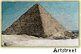

|
A court official's
account
Mansa Musa
is indeed a great king! Thousands of his people accompanied him
across the desert on his recent trip to Mecca. Leading the group
were attendants carrying banners of red and yellow, the colors of
Mali’s flag.  When
the king's great caravan arrived in Cairo, it camped for three days
at the pyramids, and Mansa Musa sent 50,000 gold coins to the Sultan
to announce his arrival. This beneficent king also presented thousands
of gold bars to the court official who greets important visitors.
But this was only a small portion of the gold that this most munificent
of kings brought. In return for these great gifts, our Sultan lent
Mansa Musa a grand palace for his stay in Cairo. Such a gesture
was only fitting for the venerable Mansa Musa.
|